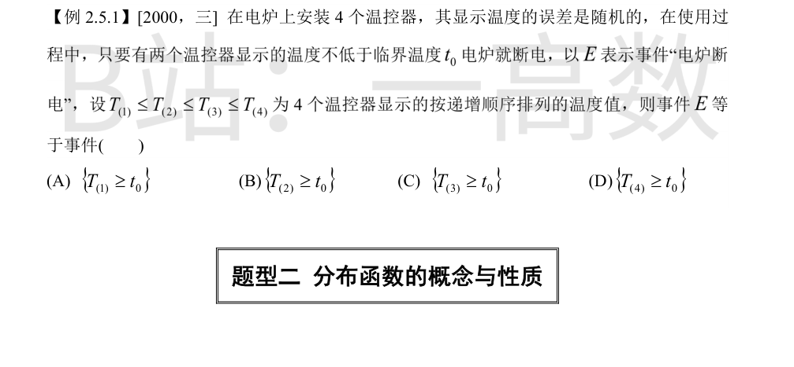
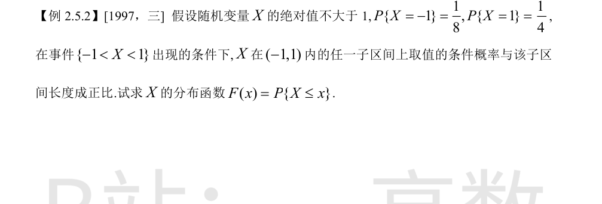
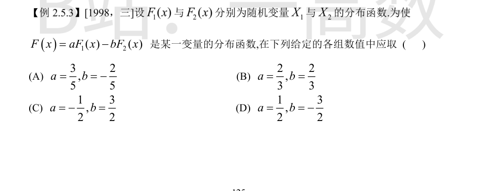
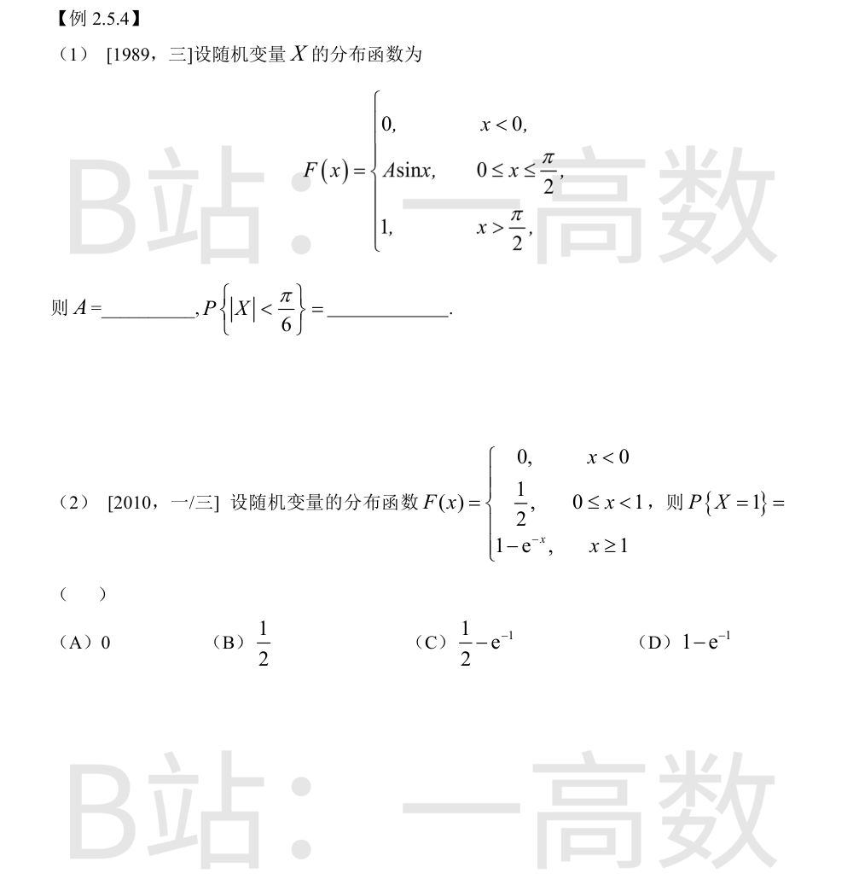

\"至少两个温控器显示温度 $\ge t_0$\" 等价于按递增排序后第 3 个（第二大）温度不低于 $t_0$：若至少两个 $\ge t_0$，则 $T_{(3)},T_{(4)}\ge t_0$；反之若 $T_{(3)}\ge t_0$，则至少 $T_{(3)},T_{(4)}$ 两个 $\ge t_0$。故 $E=\{T_{(3)}\ge t_0\}$，选 (C)。（(B) 表示至少 3 个达标，(D) 表示 4 个达标，(A) 表示全部达标，均过强。）

$P\{-1<X<1\}=1-\tfrac18-\tfrac14=\tfrac58$。在 $(-1,1)$ 内条件分布为均匀分布，对 $-1<x<1$：
$$P\{-1<X\le x\mid -1<X<1\}=\frac{x+1}{2}$$
故 $P\{-1<X\le x\}=\dfrac58\cdot\dfrac{x+1}{2}=\dfrac{5(x+1)}{16}$，从而
$$F(x)=P\{X=-1\}+P\{-1<X\le x\}=\frac18+\frac{5(x+1)}{16}=\frac{5x+7}{16},\quad -1\le x<1$$
端点：$x<-1$ 时 $F=0$；$x\ge1$ 时 $F=1$。检验 $F(1^-)=\tfrac{12}{16}=\tfrac34$，加上 $P\{X=1\}=\tfrac14$ 恰为 1，正确。

分布函数须满足 $\lim\limits_{x\to+\infty}F(x)=1$，而 $F_1(+\infty)=F_2(+\infty)=1$，故需
$$a-b=1$$
又 $F(x)$ 须单调不减：$F_1,F_2$ 不减，需 $a\ge0$ 且 $-b\ge0$，即 $b\le0$。
逐项检验：$a=\tfrac35, b=-\tfrac25$：$a-b=1$ ✓，$a>0,b<0$ ✓；$a=\tfrac23,b=\tfrac23$：$a-b=0$ ✗；$a=-\tfrac12,b=\tfrac32$：$a-b=-2$ ✗；$a=\tfrac12,b=-\tfrac32$：$a-b=2$ ✗。只有 (A) 满足，选 (A)。

分布函数在分段点 $x=\dfrac{\pi}{2}$ 处右连续且此处连续（连续型）：$A\sin\dfrac{\pi}{2}=A=1$，故 $A=1$。
$F$ 处处连续（$F(0)=0$ 衔接左段），故
$$P\left\{|X|<\frac{\pi}{6}\right\}=P\left\{-\frac{\pi}{6}<X<\frac{\pi}{6}\right\}=F\left(\frac{\pi}{6}\right)-F\left(-\frac{\pi}{6}\right)=\sin\frac{\pi}{6}-0=\frac12$$
概率集中在跳跃点：
$$P\{X=1\}=F(1)-F(1^-)=\left(1-e^{-1}\right)-\frac12=\frac12-e^{-1}$$
选 (C)。